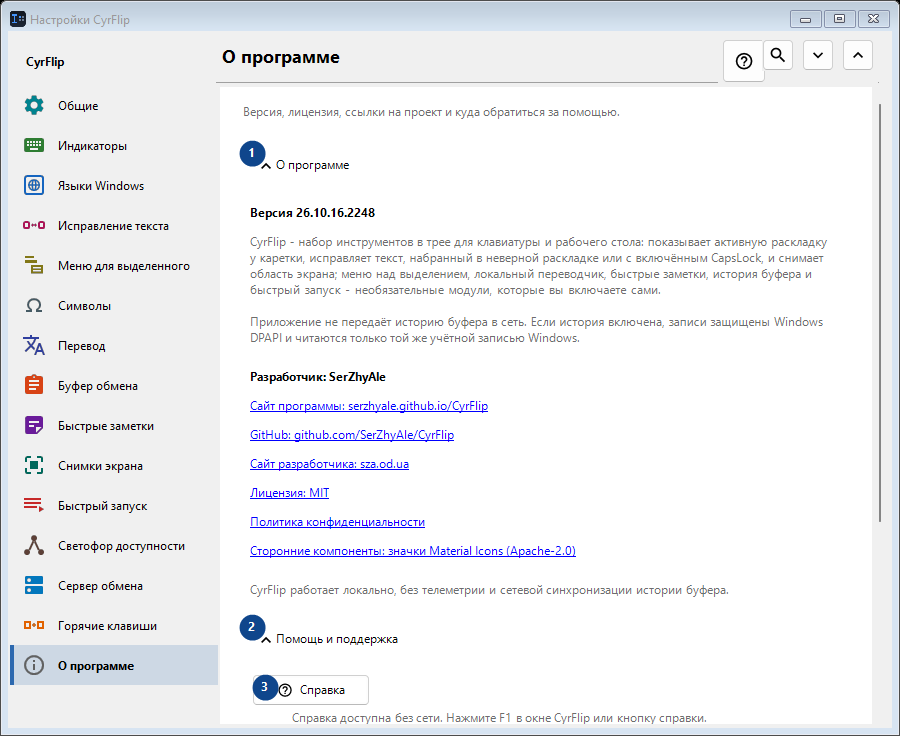
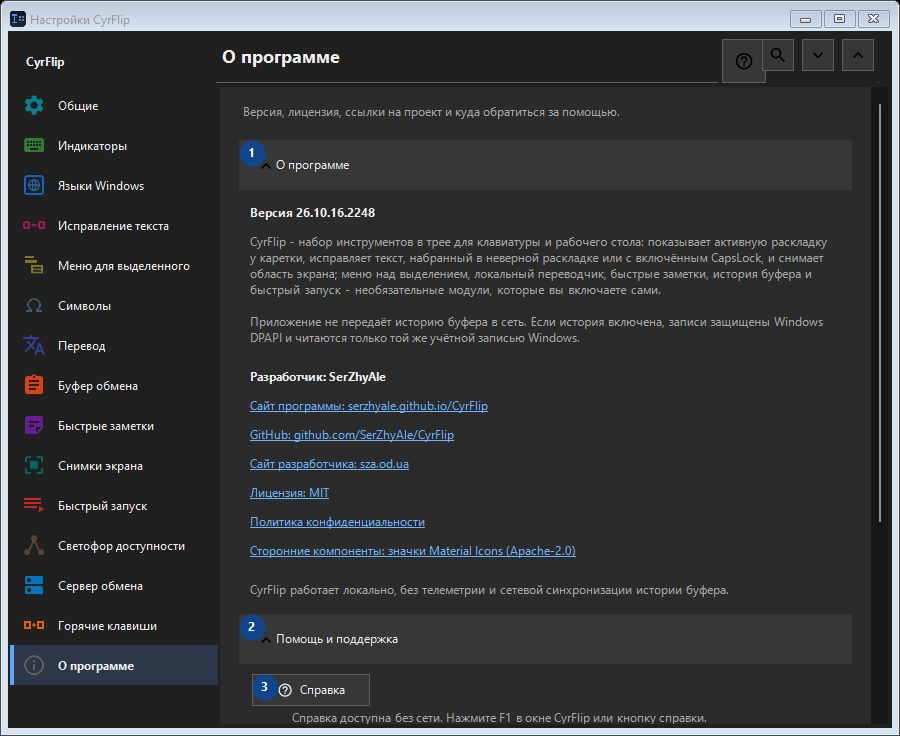

О программе
Для чего это окно
Версия, лицензия, ссылки на проект и куда обратиться за помощью.


Порядок действий
Настройки применяются сразу. Обязательного порядка нет; используйте группы ниже.
Элементы
1. О программе
Используйте команду, когда нужно указанное действие. Прочитайте запрос подтверждения перед согласием.
Ваши сочетания клавиш2. Помощь и поддержка
Используйте команду, когда нужно указанное действие. Прочитайте запрос подтверждения перед согласием.
Ваши сочетания клавиш3. Справка
Справка доступна без сети. Нажмите F1 в окне CyrFlip или кнопку справки.
Ваши сочетания клавиш4. Показать приветствие..
Знакомство с CyrFlip и первоначальная настройка.
Ваши сочетания клавиш5. Диагностика положения каретки...
Создаёт локальный отчёт о том, как Windows и UI Automation видят каретку. Нужен только если метка не появляется или рисуется не там в конкретной программе.
Ваши сочетания клавиш6. Отправить логи автору..
Собирает логи CyrFlip в один архив и открывает письмо автору с этим вложением. Письмо отправляете вы сами — CyrFlip ничего не передаёт в сеть. История буфера обмена в архив не попадает.
Ваши сочетания клавиш